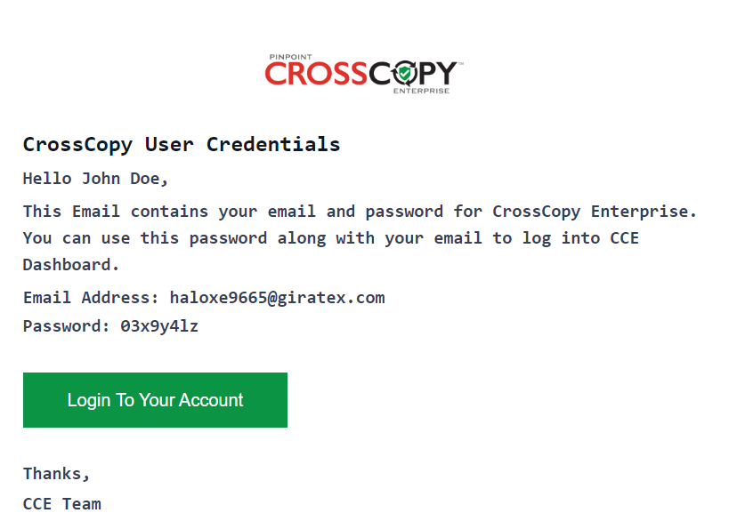
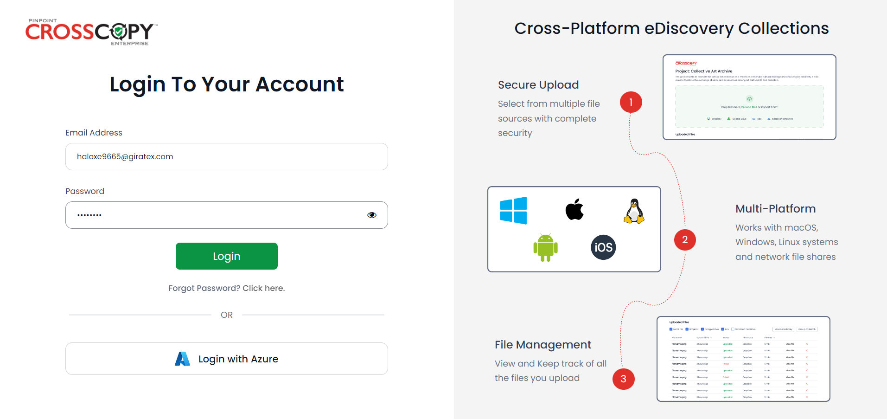
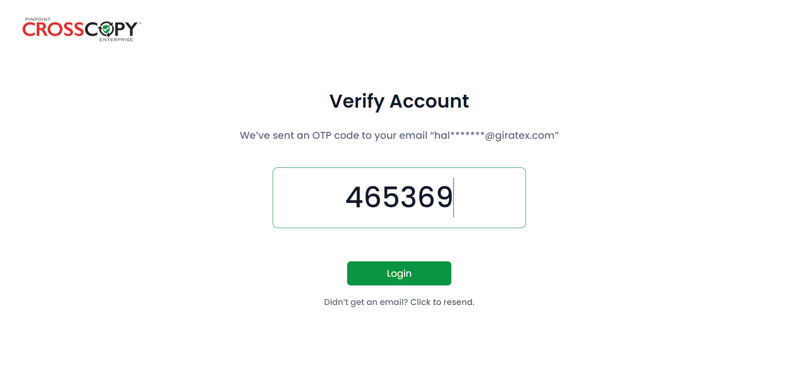

Whenever an admin adds a new user, they will receive an email with login information.
Click on the Login To Your Account button. The main login page will open. Enter your details and click on the Login button.
You will be prompted to add an OTP code which is shared on your email.

Enter the OTP code and click on the Login button. If you haven’t
received the email, you can request another by clicking on the
Click to resend button below the Login button.
Upon logging in successfully, you will be redirected to your
dashboard.
Here, you will be able to see details of the project(s) assigned to you.
On your dashboard, you can view multiple statistics such as
the total number of projects, requests, and custodians, along with the
sizes of files uploaded over time, recent active requests, etc.